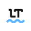

Quit paying for software.
Use these free alternatives instead.
Free and open-source replacements for 134 popular paid apps, ranked and compared with live project data, so you can see which ones are still maintained.
🎨 Design & Creative
See all 24 →Photo editing, illustration, video, audio, animation and 3D without the subscription.
 Quit paying forAdobe Photoshop
Quit paying forAdobe Photoshop
Photo editing and raster graphics
Quit paying forAdobe Illustrator
Vector illustration and logo design
Quit paying forAdobe Premiere Pro
Video editing
Quit paying forAdobe After Effects
Motion graphics and visual effects
 Quit paying forFigma
Quit paying forFigma
UI design and prototyping
Quit paying forAdobe Lightroom
RAW photo editing and photo management
Quit paying forAdobe Audition
Audio editing
Quit paying forAdobe InDesign
Page layout and desktop publishing
 Quit paying forCinema 4D
Quit paying forCinema 4D
3D modeling and animation
Quit paying forCamtasia
Screen recording and tutorial videos
 Quit paying forCanva Pro
Quit paying forCanva Pro
Graphic design and social media visuals
 Quit paying forFinal Cut Pro
Quit paying forFinal Cut Pro
Video editing on Mac
Quit paying forFL Studio
Music production and beat making
 Quit paying forAbleton Live
Quit paying forAbleton Live
Music production and live performance
Quit paying forAdobe Animate
2D animation
Quit paying forAutoCAD
2D and 3D CAD drafting
 Quit paying forSketchUp
Quit paying forSketchUp
3D modeling for architecture and interiors
 Quit paying forCapCut Pro
Quit paying forCapCut Pro
Quick video editing for social media
 Quit paying forVEGAS Pro
Quit paying forVEGAS Pro
Video editing on Windows
Quit paying forCorelDRAW
Vector graphics and illustration
Quit paying forLogic Pro
Music production on Mac
 Quit paying forPro Tools
Quit paying forPro Tools
Audio recording and mixing
Quit paying forAutodesk Maya
3D animation and modeling
Quit paying forSnagit
Screenshots and quick screen recordings
🗂️ Office & Productivity
See all 13 →Documents, notes, tasks, PDFs and passwords.
 Quit paying forMicrosoft 365 (Office)
Quit paying forMicrosoft 365 (Office)
Documents, spreadsheets and presentations
 Quit paying forNotion
Quit paying forNotion
Notes, wikis and project workspaces
 Quit paying forEvernote
Quit paying forEvernote
Note-taking and web clipping
 Quit paying forTrello
Quit paying forTrello
Kanban boards and task management
 Quit paying forAdobe Acrobat
Quit paying forAdobe Acrobat
Editing, merging and signing PDFs
 Quit paying forGrammarly Premium
Quit paying forGrammarly Premium
Grammar and writing checks

 Quit paying forTodoist
Quit paying forTodoist
To-do lists and task management
 Quit paying for1Password
Quit paying for1Password
Password management
Quit paying forLastPass
Password management
Quit paying forMicrosoft Word
Writing and formatting documents
Quit paying forMicrosoft Excel
Spreadsheets and data analysis
Quit paying forMicrosoft PowerPoint
Presentations and slide decks
Quit paying forDashlane
Password management
💼 Business & Communication
See all 18 →Chat, video calls, accounting, CRM, e-signatures, forms and online stores.
 Quit paying forZoom
Quit paying forZoom
Video meetings
 Quit paying forSlack
Quit paying forSlack
Team chat
 Quit paying forMicrosoft Teams
Quit paying forMicrosoft Teams
Team chat and meetings
 Quit paying forDocuSign
Quit paying forDocuSign
Electronic signatures
 Quit paying forQuickBooks
Quit paying forQuickBooks
Small-business accounting
 Quit paying forMailchimp
Quit paying forMailchimp
Email newsletters and marketing
 Quit paying forCalendly
Quit paying forCalendly
Appointment scheduling
 Quit paying forSalesforce
Quit paying forSalesforce
Customer relationship management (CRM)
 Quit paying forTypeform
Quit paying forTypeform
Online forms and surveys
 Quit paying forShopify
Quit paying forShopify
Running an online store
 Quit paying forAsana
Quit paying forAsana
Project and task management for teams
 Quit paying formonday.com
Quit paying formonday.com
Work management boards and workflows
 Quit paying forClickUp
Quit paying forClickUp
Tasks, docs and project management in one app
 Quit paying forFreshBooks
Quit paying forFreshBooks
Invoicing and small-business accounting
Quit paying forXero
Cloud accounting for small businesses
 Quit paying forPipedrive
Quit paying forPipedrive
Managing a sales pipeline (CRM)
 Quit paying forWebex
Quit paying forWebex
Video meetings and webinars
 Quit paying forJotform
Quit paying forJotform
Online forms and data collection
🛠️ Developer & IT
See all 8 →Code editors, API tools, containers, dashboards, automation and project tracking.
 Quit paying forPostman
Quit paying forPostman
API testing and development
 Quit paying forJetBrains IDEs
Quit paying forJetBrains IDEs
Code editing and IDEs
 Quit paying forDocker Desktop
Quit paying forDocker Desktop
Running containers on your computer
Quit paying forTableau
Data visualization and dashboards
 Quit paying forAirtable
Quit paying forAirtable
Spreadsheet-style databases
 Quit paying forZapier
Quit paying forZapier
Connecting apps and automating workflows
 Quit paying forJira
Quit paying forJira
Issue tracking and project management
Quit paying forSublime Text
Fast code and text editing
🧰 Utilities & Everyday
See all 6 →Remote desktop, cloud storage, media servers, file archivers and diagrams.
Quit paying forTeamViewer
Remote desktop access
 Quit paying forDropbox
Quit paying forDropbox
Cloud file storage and sync
Quit paying forPlex Pass
Streaming your personal media library
 Quit paying forWinRAR
Quit paying forWinRAR
Opening and creating compressed archives
 Quit paying forMicrosoft Visio
Quit paying forMicrosoft Visio
Diagrams and flowcharts
Quit paying forLucidchart
Online diagramming
🤖 AI Tools
See all 8 →Chatbots, image generators and transcription you can run yourself, free.
 Quit paying forChatGPT Plus
Quit paying forChatGPT Plus
AI chat assistance
 Quit paying forClaude Pro
Quit paying forClaude Pro
AI chat assistance
 Quit paying forMidjourney
Quit paying forMidjourney
AI image generation
 Quit paying forOtter.ai
Quit paying forOtter.ai
AI transcription of meetings and audio
Quit paying forAdobe Firefly
AI image generation and editing
 Quit paying forGoogle AI Pro (Gemini)
Quit paying forGoogle AI Pro (Gemini)
AI chat assistance
Quit paying forPerplexity Pro
AI answers and research
Quit paying forDescript
Transcribing and editing audio and video
🎓 Education & Research
See all 8 →Citations, statistics, math software and study tools for students and researchers.
 Quit paying forEndNote
Quit paying forEndNote
Reference and citation management
 Quit paying forMendeley
Quit paying forMendeley
Reference and citation management
 Quit paying forMATLAB
Quit paying forMATLAB
Numerical computing and engineering
Quit paying forIBM SPSS Statistics
Statistical analysis
 Quit paying forMathematica
Quit paying forMathematica
Symbolic math and computation
 Quit paying forQuizlet Plus
Quit paying forQuizlet Plus
Flashcards and studying
 Quit paying forStata
Quit paying forStata
Statistics and data analysis
Quit paying forMinitab
Statistics and quality improvement
✍️ Writing
See all 5 →Apps for novels, screenplays and distraction-free writing.
 Quit paying forScrivener
Quit paying forScrivener
Writing novels and long manuscripts
 Quit paying forFinal Draft
Quit paying forFinal Draft
Screenwriting
Quit paying forUlysses
Distraction-free Markdown writing
Quit paying forProWritingAid Premium
Grammar and style editing
 Quit paying foriA Writer
Quit paying foriA Writer
Focused Markdown writing
📣 Marketing & Websites
See all 14 →Social scheduling, customer support, websites, links and time tracking for small businesses and creators.
Quit paying forHootsuite
Scheduling social media posts
 Quit paying forBuffer
Quit paying forBuffer
Scheduling social media posts
 Quit paying forZendesk
Quit paying forZendesk
Customer support and help desk
 Quit paying forIntercom
Quit paying forIntercom
Website live chat and customer messaging
 Quit paying forToggl Track
Quit paying forToggl Track
Time tracking
 Quit paying forSquarespace
Quit paying forSquarespace
Building websites
 Quit paying forWix
Quit paying forWix
Building websites
Quit paying forLoom
Recording quick screen videos
Quit paying forLinktree Pro
Link-in-bio pages
 Quit paying forBitly
Quit paying forBitly
Shortening and tracking links
 Quit paying forSurveyMonkey
Quit paying forSurveyMonkey
Online surveys
 Quit paying forWebflow
Quit paying forWebflow
Designing and building websites
 Quit paying forConstant Contact
Quit paying forConstant Contact
Email marketing and newsletters
 Quit paying forSprout Social
Quit paying forSprout Social
Social media scheduling and management
🏠 Personal Finance & Home
See all 7 →Budgeting, photo backup, file backup and media for your household.
 Quit paying forYNAB (You Need A Budget)
Quit paying forYNAB (You Need A Budget)
Personal budgeting
 Quit paying forQuicken
Quit paying forQuicken
Personal finance tracking
 Quit paying forGoogle One storage (Google Photos)
Quit paying forGoogle One storage (Google Photos)
Photo backup and storage
 Quit paying forBackblaze
Quit paying forBackblaze
Computer backup
 Quit paying forMonarch Money
Quit paying forMonarch Money
Budgeting and net-worth tracking
Quit paying foriCloud+
Cloud storage and photo backup for Apple devices
 Quit paying forIDrive
Quit paying forIDrive
Computer and cloud backup
🎬 Streaming & Entertainment
See all 18 →Free, legal ways to stream music, movies, TV, audiobooks and ebooks without a subscription.
 Quit paying forSpotify Premium
Quit paying forSpotify Premium
Music streaming
 Quit paying forApple Music
Quit paying forApple Music
Music streaming
 Quit paying forSiriusXM
Quit paying forSiriusXM
Radio and talk streaming
 Quit paying forNetflix
Quit paying forNetflix
Streaming movies and TV shows
 Quit paying forHulu
Quit paying forHulu
Streaming TV shows and live TV
 Quit paying forHBO Max
Quit paying forHBO Max
Streaming premium series and films
Quit paying forDisney+
Streaming family movies and shows
Quit paying forParamount+
Streaming TV, movies and live sports
 Quit paying forPeacock
Quit paying forPeacock
Streaming TV, movies and live events
 Quit paying forAmazon Prime Video
Quit paying forAmazon Prime Video
Streaming movies and series
Quit paying forYouTube Premium
Ad-free YouTube and background play
 Quit paying forAudible
Quit paying forAudible
Audiobooks
 Quit paying forKindle Unlimited
Quit paying forKindle Unlimited
Ebook subscriptions
 Quit paying forYouTube TV
Quit paying forYouTube TV
Live TV streaming
 Quit paying forSling TV
Quit paying forSling TV
Live TV streaming
 Quit paying forApple TV+
Quit paying forApple TV+
Streaming original movies and series
 Quit paying forTIDAL
Quit paying forTIDAL
Hi-fi music streaming
Quit paying forEverand (Scribd)
Ebook and audiobook subscriptions
🔒 Privacy & Security
See all 5 →Free VPNs and privacy tools that protect your connection without a subscription.
Quit paying forNordVPN
VPN service for privacy and security
 Quit paying forExpressVPN
Quit paying forExpressVPN
VPN service for privacy and security
 Quit paying forSurfshark
Quit paying forSurfshark
VPN service for privacy and security
Quit paying forCyberGhost VPN
VPN service for privacy and security
Quit paying forPrivate Internet Access
VPN service for privacy and security
No match yet. Try another app name, or ask us to add it.